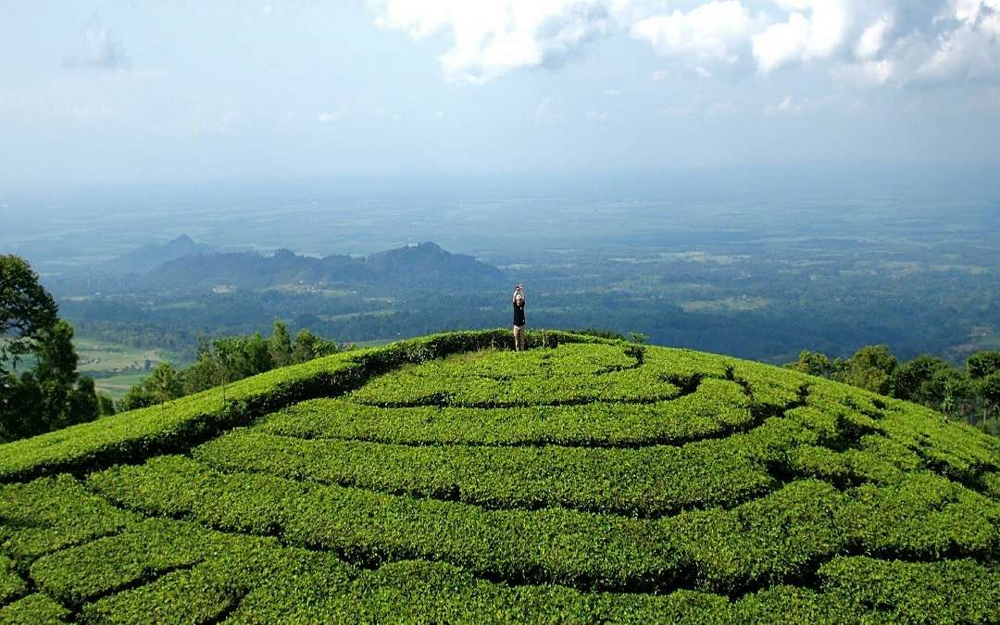
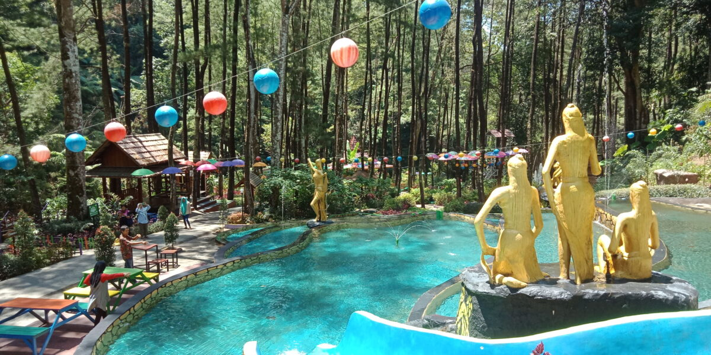
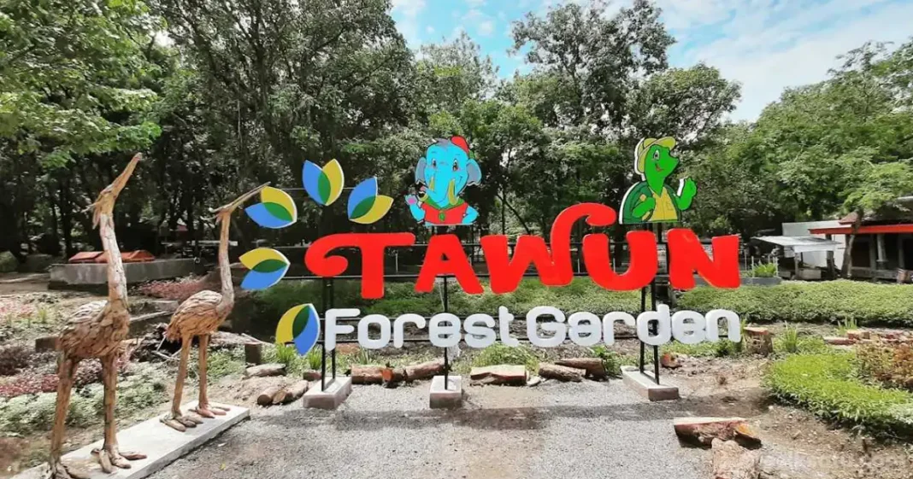
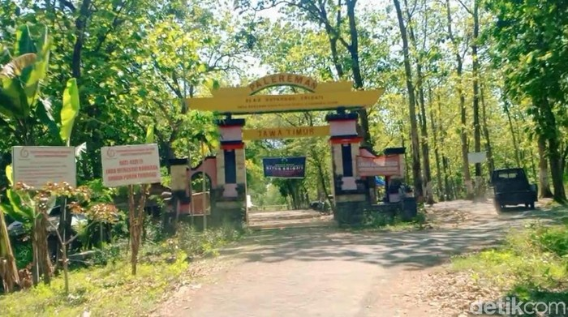
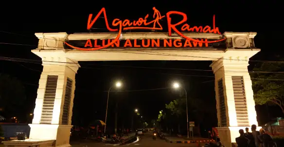
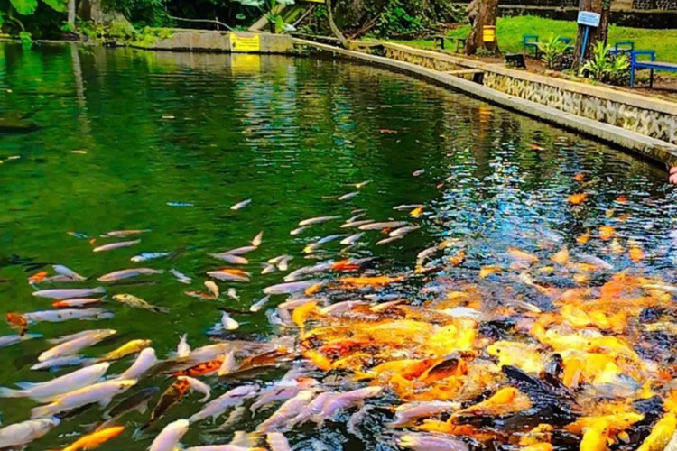
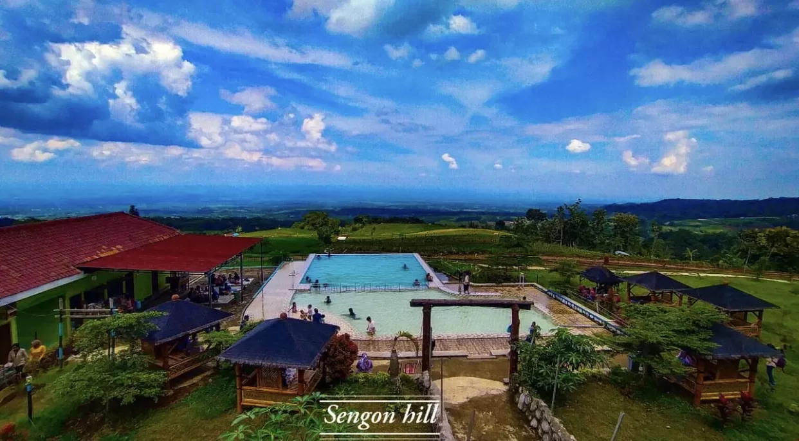

Kebun Teh Jamus
Perkebunan teh luas dengan panorama pegunungan.
Baca
Selengkapnya

Srambang Park
Wisata alam hutan tropis dan air pegunungan yang segar.
Baca Selengkapnya

Air Terjun Pengantin
Air terjun dengan dua aliran indah yang berdampingan.
Baca
Selengkapnya

Taman Wisata Tawun
Kolam besar alami dan taman legendaris di Ngawi.
Baca
Selengkapnya

Alas Ketonggo
Hutan keramat dan mistis dengan sejarah babad tanah Jawa.
Baca Selengkapnya

Alun-Alun Ngawi
Alun-alun modern dengan lampu warna-warni dan kuliner malam.
Baca Selengkapnya

Sumber Koso
Destinasi wisata alam di lereng Gunung Lawu, Desa Girikerto, Kecamatan Sine, Ngawi, yang menawarkan sumber air jernih
Baca Selengkapnya

Sengon Hills
Destinasi wisata alam di Kabupaten Ngawi, Jawa Timur, yang menawarkan pemandangan perbukitan dan udara sejuk.
Baca Selengkapnya